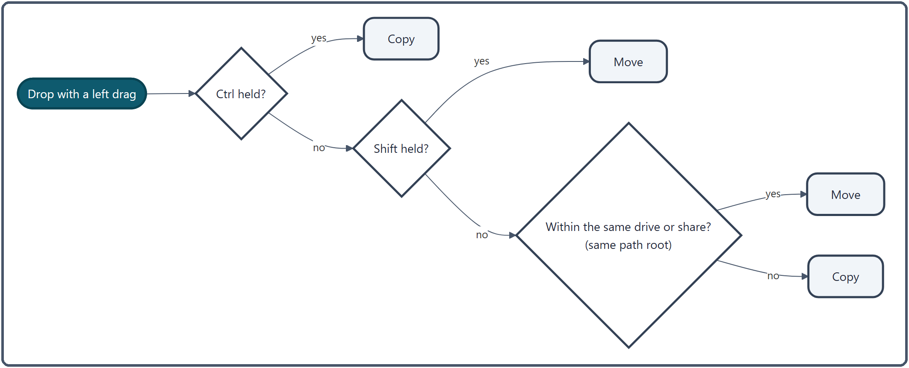

Drag & Drop¶
The rules for copying and moving files by dragging, and what happens depending on where you drop them. It also covers how a copy proceeds after the drop (overwrite prompts and progress).
What you can do¶
| To do this | Do this |
|---|---|
| Copy or move to the other pane | Drag files to the other pane |
| Choose between copy and move | Hold Ctrl to copy, Shift to move |
| Decide what to do when you drop | Drag with the right button → "Copy here", "Move here" or "Create shortcut here" |
| Send files up the tree | Drop them on a folder name in the breadcrumb |
| Exchange files with File Explorer and other apps | Just drag (Outlook emails and browser addresses are accepted too) |
| Open a place from Favorites or the history | Drop the nav pane item on the file list |
When a drag starts, the number of items you are carrying appears next to the cursor, as in "Drop 5 items to copy/move destination". Places you can drop on (folder rows and so on) are highlighted in the same color as a selected row.
How to use it¶
Starting a drag¶
- Select several items with
CtrlorShiftand drag to carry all of them. If you grab a row that is not selected, the selection is reset and only that row is carried (even if the mouse slides onto the next row after you grab it, the row you grabbed is the one that goes). - In the file list and the tab bar, a drag starts once the mouse moves 10px or more, so a slight wobble while clicking never moves anything by accident. The nav pane's tree, Favorites, history and so on use the Windows setting instead (usually 4px).
- No drag starts while a right-click menu is open, or for 0.15 seconds after it closes.
The item count next to the cursor can be turned off with Effects → Show drag adorner (it is also hidden in lightweight mode).
Where to drop¶
| Drop on | What happens |
|---|---|
| A folder row in the file list | Copy or move into that folder |
| An empty part of the file list, or a file row | Copy or move into the folder being shown |
A shortcut (.lnk) to a folder |
Copy or move into the folder it points to (copy vs. move is decided by where that folder is, too) |
An executable such as .exe |
Not copied: the program is started with the files passed to it (see Dropping on executables) |
| A folder name in the breadcrumb | Copy or move into that folder |
| The tab bar | Open the folder in a new tab (see Tabs) |
| A folder in the nav pane's tree | Move into that folder (see "Dropping on the tree" below) |
| The nav pane's Favorites | Add to Favorites (not while Favorites are locked) |
| File Explorer, the desktop or another app | Copied or moved by the receiving app's rules |
Dropping on the tree: anything dropped on the tree is moved, even across drives and even with Ctrl held. Dropping on the top or bottom edge of a folder row (a quarter of its height each) moves the items alongside that folder (into its parent) instead of into it. You cannot drop on the tree while it is locked. Items from the history, frequent folders, drives and Favorites cannot be dropped on the tree: they are there to open places, so drop them on Pane A or B.
Copy or move¶
With a left drag, the drop is decided in this order:
Ctrlheld → copy (even together withShift)Shiftheld → move- Neither → move within the same drive; copy to another drive, a network share or a server (the same idea as File Explorer)
Pressing or releasing a key before you drop changes the cursor to match.
Choosing with a right drag¶
Hold the right button while dragging, and a menu appears where you drop:
- Copy here / Move here
- Create shortcut here: creates a shortcut to the original (for example
original name - Shortcut.lnk).
Clicking outside the menu does nothing. It works within a pane, across panes, and on the breadcrumb. The menu appears only for right drags that started inside the app (a right drag from File Explorer follows the same rules as a left drag).
Receiving from outside¶
- Files from File Explorer: dropped on the file list or the breadcrumb, they are copied or moved by the same rules as inside the app.
- Browser addresses: dropping the address bar or a link creates an Internet shortcut (
.url) to that address. - Outlook emails and attachments: drop them, or paste with
Ctrl + V, to save them in the current folder (emails become.msgfiles).
Dropping items that open places¶
Items from the nav pane's Favorites, history, frequent folders, drives and tree, dropped on the file list, do not copy anything: they go to that folder. If search results are showing, the search is cleared first. Dropped on the tab bar, they open in a new tab. While you drag them, "Drop onto pane A or pane B" appears next to the cursor.
Items from Favorites, the history, frequent folders and drives are treated as bookmarks that point to a place. Dropped on File Explorer or the desktop, they create a shortcut, and the folder itself stays where it is. They cannot be dropped on the breadcrumb or the tree (they are never copied or moved). Tree items are real folders, so dropping one on File Explorer copies or moves it by File Explorer's rules.
Dropping on executables¶
Dropping files on an .exe / .bat / .cmd / .com row, or on a Windows Script Host script (.js / .jse / .vbs / .vbe / .wsf), does not copy or move them. Instead, the program is started with the file paths passed as arguments. While you drag, that row is highlighted and the cursor changes to the shortcut shape, so you can tell it apart from a copy or move.
With several files selected, all their paths are passed together, and the program starts in its own folder. Because starting a program cannot be undone, you are asked first (choosing "No" neither copies nor moves anything). If there are so many files that the command line would be too long, nothing is started and you are told why.
.ps1 is not included (Windows drag and drop does not pass arguments to it either). Dropping on a .lnk to a folder copies or moves into the folder it points to. Files on a server (FTP / SFTP) cannot be passed as arguments.
How it works¶
How copy or move is decided¶

- "The same drive" means the start of the path (
C:or\\server\share) is the same, ignoring letter case. The actual disk is not checked, so a different disk attached as a folder (a mounted folder or a junction) counts as the same drive. - Server (FTP / SFTP) folders always count as "somewhere else". Transfers with a server only support copying, so a move is done as a copy and you are told that the original was left in place. Files cannot be carried directly from one server to another.
After the drop¶
Copies and moves dropped on the file list or the breadcrumb run through the app's own transfer engine.
- Count first: it counts how many files there are and how big they are. If you are trying to put a folder inside itself, it stops here.
- Progress window: Display → Copy progress window in Settings chooses whether a window with speed and time remaining appears: Always show (the default) / Only for large transfers (50 files or 50 MB) / Never (the bar at the bottom left only). Closing the window does not stop the transfer; the bar at the bottom left takes over.
- Name clashes: the "File Conflict" dialog offers Replace, Skip, Rename, Keep newer and Keep larger. "Apply to all" decides for every clash at once.
-
Several at a time: files are carried in parallel, half as many as your CPU has cores (2 to 8). After 3 failures in a row, the transfer stops.
-
Moving something into the folder it is already in is skipped. Copying into the same folder makes "original name - Copy" without asking.
- Only drops on the tree are handed to Windows' own move. Name clashes are renamed automatically, and neither the conflict dialog nor the app's progress window appears.
Keeping right drags from stalling¶
For a right drag, a Windows shell item is created for each file so the drop behaves like File Explorer's. That takes time per file: right-dragging 1,284 files in a cloud-synced folder froze the window for 1.5–1.9 seconds. So shell items are created for up to 200 files, and beyond that only the list of paths is handed over.
Related¶
- Address Bar and Breadcrumb — dropping on the breadcrumb
- Tabs — dragging tabs, dropping on the tab bar
- File Operations — copy, move and delete
- Nav Pane — the tree, Favorites and history
- FTP/SFTP — exchanging files with a server